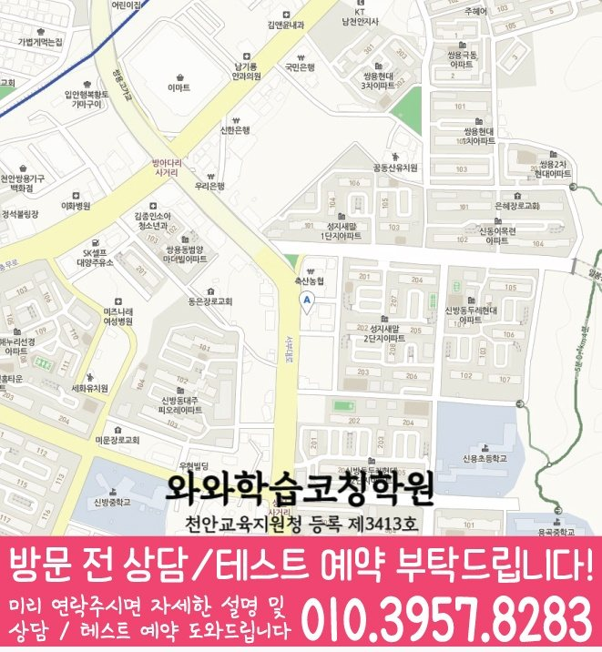

High school Korean · English · Math
용곡동 고등학생 국영수학원
용곡동 고등학생 국영수학원 선택 전 고등 내신 자료, 최근 오답과 과목별 가능 학년, 센터 위치·비용 확인 기준을 안내합니다.
01 Quick answer
용곡동에서 먼저 확인할 내용
용곡동에서 고등학생 국영수학원을 찾는다면 와와학습코칭센터 신방점의 과목별 가능 학년을 먼저 확인하세요. 제공된 고등학교 참고 자료와 학생의 실제 교재를 대조하고, 학생의 실제 풀이 기록에 맞게 현재 자료에서 확인한 문제를 수업, 복습과 재점검으로 연결하는지 살펴봐야 합니다.
대표 학생 상황
세 과목의 과제 순서와 오답 복습 시점을 스스로 정리하기 어려운 고등학생


010-6839-8283상담 전 핵심 안내
충청남도 천안시 용곡동에서 고등학생 영어·수학 학원을 찾는 학생을 위해, 현재 성적을 기준으로 개념 보완부터 유형 학습, 오답 관리, 실전 대비까지 이어지는 학습 로드맵을 안내합니다. 용곡동 학습 과정에서는 과제 이행 기록을 바탕으로 상담에서 확인할 기준을 정리합니다. 충청남도 천안시 용곡동 학부모님이 고등학생 국영수학원을 알아볼 때는 수업 수가 많은 곳보다 학생 상황을 정확히 나누는 곳이 실질적입니다. 용곡동 상담에서 이 학습 상황을 어떻게 점검할지 살펴봅니다.
현재 자료에서 먼저 확인할 학습 신호
정확한 진단으로 약점부터 공략. 단순히 진도를 밀기보다 문법·독해·유형별 풀이에서 어디가 무너졌는지 찾아 학생에게 필요한 순서로 학습을 설계합니다.
영어·수학 균형 학습 운영. 용곡동 수업 계획에서는 진단 결과를 바탕으로 상담에서 확인할 기준을 정리합니다.
용곡동 학부모님이 주간 학습 시간을 확인한다면 시험 직전 강의보다 평소 기록 관리가 어떻게 이어지는지 확인해야 합니다. 용곡동 국어·영어·수학 학습 계획 내신 관리는 최근 시험 범위, 틀린 유형, 학교 수업 자료를 한꺼번에 놓고 과목별 우선순위를 정해야 합니다. 충청남도 천안시 용곡동 고등학생은 국어·영어·수학 중 한 과목만 급히 올리려 하기보다 시험 전후 루틴을 꾸준히 맞추는 편이 현실적입니다.
수업 안팎의 학습 태도를 살피는 방법
풀이가 아니라 이해의 이유를 잡아줍니다. 학생이 틀리는 지점을 과정으로 확인하고, 같은 실수가 반복되지 않도록 개념 연결과 문제 적용을 함께 정리합니다.
학습 태도·오답 습관까지 함께 지도. 용곡동 학습 순서를 정할 때는 과제 이행 기록을 바탕으로 보완할 단원을 구분합니다.
용곡동 학생의 학교 자료를 확인하는 순서
학교 일정까지 함께 보면, 용곡동 고등학교 참고 정보에는 청수고·쌍용고·천안여고가 포함됩니다. 가정에서 기록을 준비하면, 학교명만으로 수업 가능 여부를 판단하지 않고 센터의 현재 개설 범위를 함께 확인해야 합니다.
학생의 현재 자료를 기준으로 보면, 시험 범위표·학교 프린트·수행평가 일정 자료를 준비한 뒤 국어의 읽기 근거, 영어의 문장 적용과 수학의 풀이 과정을 따로 확인하세요. 학교 자료를 대조할 때, 용곡동 상담에서는 이 기록이 과목별 우선순위로 이어지는지가 핵심입니다.
개념 확인부터 오답 복습까지
1. 현재 수준 확인. 고등 1~3학년 학습 상황, 학교 진도, 최근 시험/모의고사 흐름을 바탕으로 부족한 단원과 자주 틀리는 유형을 구체적으로 확인합니다.
2. 개념 정리와 유형 학습. 공식·문법·해석 원리처럼 먼저 이해해야 하는 부분을 정리한 뒤, 대표 유형부터 심화/실전 문제까지 단계적으로 훈련합니다.
3. 오답 관리와 학습 피드백. 틀린 문제를 다시 푸는 데서 멈추지 않고 왜 틀렸는지(개념 오류/독해 실수/계산·조건 누락)와 다음 학습 전략을 정리합니다.
학년 단계에 맞춘 준비 기준
고등 1학년. 영어는 문법 기초와 독해 기본 틀(주제·요지·지시어)을 안정화합니다. 수학은 핵심 개념 정리와 기본 유형 반복으로 흔들림 없는 기반을 만듭니다.
고등 2학년. 영어는 서술형/해석 중심 문제까지 확장해 실수 요인을 줄입니다. 수학은 단원별 유형을 묶어 약한 파트를 집중 보완하고 오답 패턴을 관리합니다.
고등 3학년. 내신과 수능형 문제의 성격을 구분해 시간 배분과 접근법을 훈련합니다. 약한 단원, 시간 관리, 빈출 오답을 우선순위로 재정비합니다.
시험 대비. 학교 시험 범위와 제공된 시험지의 문항 유형에 맞춰 복습 계획을 재구성합니다. 시험 전에는 실수 유형과 자주 틀리는 문제를 우선 점검해 안정적인 점수를 목표로 합니다.
충청남도 천안시 용곡동 지역 센터는 고등학생의 현재 상태를 바탕으로 영어·수학 학습을 단계별로 정리하고, 상담을 통해 필요한 방향을 구체적으로 정리합니다.
02 Consultation examples
용곡동 학부모 상담 상황 예시
아래 내용은 실제 고객 후기나 성적 결과가 아니라, 상담에서 확인할 질문을 이해하기 위한 상황 예시입니다.
용곡동 학부모가 자녀의 세 과목 학습량이 서로 충돌하는 문제를 질문한 상황을 예로 들었습니다. 상담 후에는 성적 약속보다 과목별 최소 복습량, 집중 단원과 재확인 날짜가 구체적인지 살펴봅니다.
용곡동에서 제공된 고등학교 참고 정보인 청수고·쌍용고·천안여고의 목록과 학생의 실제 학교 자료를 대조해 질문하는 경우입니다. 학부모는 교습비와 시간표뿐 아니라 과목별 진단 근거, 보완 순서와 일정 시간이 지난 뒤 재확인하는 방법까지 질문합니다.
03 FAQ
용곡동 고등학생 국영수학원 자주 묻는 질문
학부모님이 상담 전에 자주 확인하는 내용을 질문과 답변으로 정리했습니다.
용곡동 고등학생 국영수학원을 알아볼 때 학생 상태를 어떻게 확인하나요?
국어·영어·수학의 공부 시간은 많지만 완료 기준이 불분명하다면 과목별 기록과 학교 일정을 대조하세요. 용곡동 센터의 수업 가능 학년도 별도로 확인해야 합니다.
용곡동 국영수 학습에서 과목별 병목을 어떻게 나누나요?
용곡동 상담에서는 국영수를 함께 관리한다는 표현이 세 과목을 동일하게 다룬다는 뜻은 아닙니다. 학생이 막힌 장면과 시험 일정을 과목별로 확인한 뒤 공통 시간표 안에서 충돌하지 않게 배치합니다.
용곡동 고등학생은 상담 때 어떤 학교 자료를 준비해야 하나요?
용곡동의 고등학교 참고 정보에는 청수고·쌍용고·천안여고 등이 표시됩니다. 학교 목록보다 학생의 현재 시험 범위표·학교 프린트·수행평가 일정 자료와 센터 운영 범위를 대조하는 과정이 우선입니다.
용곡동 방문 상담 전 통학 조건과 비용은 어떻게 비교하나요?
센터별 교습비 확인 버튼에서 제공 자료를 볼 수 있습니다. 실제 방문 위치는 위 센터 확인 정보에서 확인할 수 있습니다. 용곡동 학생에게 맞는 시간표가 있는지와 고등학생 수업 범위는 희망 센터의 현재 안내를 기준으로 판단합니다.
04 Continue
용곡동 페이지 이동
카테고리 전체 지역 또는 앞뒤 지역 안내로 이동할 수 있습니다.